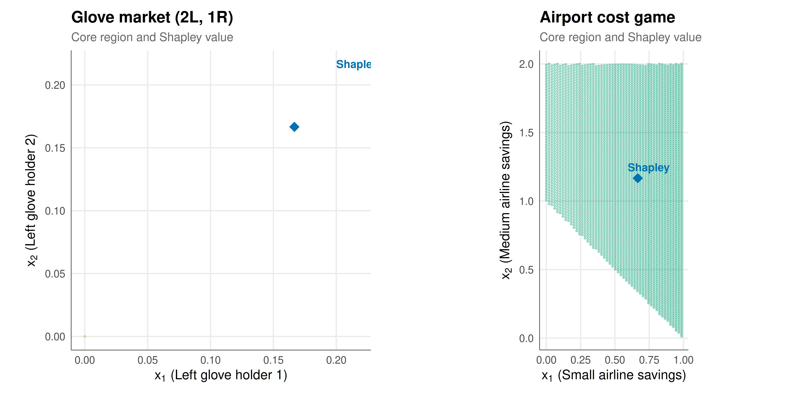

# Represent coalitions as binary vectors / integer indices
# For n players, coalition S is encoded as sum(2^(S-1))
coalition_id <- function(members, n) {
sum(2^(members - 1))
}
# Check if core is non-empty using LP (Bondareva-Shapley)
# Returns list with: non_empty, core_point (if non-empty)
check_core_lp <- function(n, v_func) {
# Enumerate all non-empty coalitions except grand coalition
coalitions <- list()
for (k in 1:n) {
combos <- combn(1:n, k, simplify = FALSE)
for (combo in combos) {
coalitions[[length(coalitions) + 1]] <- combo
}
}
# LP: min sum(x_i) s.t. sum_{i in S} x_i >= v(S) for all S
n_constraints <- length(coalitions)
# Constraint matrix: each row is a coalition, each column is a player
A <- matrix(0, nrow = n_constraints, ncol = n)
b <- numeric(n_constraints)
for (c_idx in 1:n_constraints) {
S <- coalitions[[c_idx]]
A[c_idx, S] <- 1
b[c_idx] <- v_func(S)
}
# Use a simple LP solver approach
# We want: min sum(x) s.t. Ax >= b
# Reformulate as: min c'x s.t. Ax >= b (no sign constraints on x)
# Using the lpSolve package
result <- tryCatch({
lp_sol <- lpSolve::lp("min", rep(1, n), A, rep(">=", n_constraints), b)
list(
status = lp_sol$status,
optimum = lp_sol$objval,
solution = lp_sol$solution
)
}, error = function(e) {
list(status = -1, optimum = Inf, solution = rep(NA, n))
})
grand_value <- v_func(1:n)
non_empty <- (result$status == 0) && (result$optimum <= grand_value + 1e-8)
# If non-empty, find a core allocation (efficiency: sum = v(N))
core_point <- NULL
if (non_empty) {
# Add efficiency constraint and re-solve
A2 <- rbind(A, rep(1, n), rep(-1, n))
b2 <- c(b, grand_value, -grand_value)
dir2 <- c(rep(">=", n_constraints), ">=", ">=")
# Minimise max excess (find central core point)
# Simple approach: use the LP solution and adjust for efficiency
lp_eff <- lpSolve::lp("min", rep(1, n), A2, dir2, b2)
if (lp_eff$status == 0) {
core_point <- lp_eff$solution
}
}
list(
non_empty = non_empty,
core_point = core_point,
lp_min = result$optimum,
grand_value = grand_value
)
}
# Shapley value computation (exact, for small n)
shapley_value_exact <- function(n, v_func) {
phi <- numeric(n)
players <- 1:n
# Sum over all subsets S not containing i
for (i in 1:n) {
others <- setdiff(players, i)
n_others <- length(others)
# Enumerate all subsets of others
for (k in 0:n_others) {
if (k == 0) {
subsets <- list(integer(0))
} else {
subsets <- combn(others, k, simplify = FALSE)
}
for (S in subsets) {
s_size <- length(S)
weight <- factorial(s_size) * factorial(n - s_size - 1) / factorial(n)
marginal <- v_func(c(S, i)) - v_func(S)
phi[i] <- phi[i] + weight * marginal
}
}
}
phi
}Core stability in cooperative games — unblocked allocations and the Bondareva-Shapley theorem
cooperative-gt
core
coalitional-games
linear-programming
Define the core of a cooperative game, check non-emptiness via linear programming and the Bondareva-Shapley theorem, compute core allocations for classic games, and visualize the core as a region in the simplex for three-player games.
Keywords
core, cooperative game theory, Bondareva-Shapley, balanced game, coalitional stability, LP, simplex
Introduction & motivation
The core is the most fundamental stability concept in cooperative game theory. It answers a simple but deep question: given a group of players who can form any coalition they choose, which divisions of the total payoff are stable in the sense that no coalition has both the ability and the incentive to break away? An allocation is in the core if no subset of players can do better by abandoning the grand coalition and going it alone. If the core is non-empty, the grand coalition can be sustained by distributing payoffs appropriately; if the core is empty, no division of payoffs can prevent some coalition from profitably deviating, and the grand coalition is inherently unstable.
The concept was introduced by Donald Gillies in his 1953 Princeton doctoral thesis and formalised further by Shapley and Shubik in their analysis of market games. The core captures a powerful competitive logic: an allocation is stable only if every possible coalition receives at least what it could generate independently. This requirement connects cooperative game theory to general equilibrium theory — Shapley and Shubik showed that the core of a market game converges to the set of competitive equilibria as the market is replicated, establishing a deep link between cooperative stability and competitive market outcomes (Osborne and Rubinstein 1994).
A central question in the theory is: when is the core non-empty? The Bondareva-Shapley theorem (Bondareva 1963, Shapley 1967) provides a complete answer: a cooperative game has a non-empty core if and only if it is balanced. Balancedness is an algebraic condition that can be checked via linear programming, making core non-emptiness a computationally tractable question. Intuitively, a game is balanced if there exists no way for players to “fractionally” participate in multiple coalitions simultaneously that would generate more value than the grand coalition. The LP formulation also enables computation of specific core allocations that optimise various criteria (e.g., the nucleolus, which minimises the maximum dissatisfaction of any coalition).
This tutorial implements core analysis for three classic cooperative games that illustrate the range of possible structures: (1) the three-player majority game, where any two-player coalition can win a fixed prize, leading to an empty core — no matter how the prize is divided, two of the three players can always form a blocking coalition; (2) the glove market game, where left-glove and right-glove holders must match to create value, producing a non-empty core determined by the relative scarcity of each type; and (3) the airport cost game, where airlines of different sizes share a runway whose cost depends on the largest aircraft using it. For three-player games, we visualise the core as a region in the two-dimensional simplex, providing geometric intuition for this algebraic concept.
Mathematical formulation
A cooperative game in characteristic function form is a pair \((N, v)\) where \(N = \{1, \ldots, n\}\) is the player set and \(v: 2^N \to \mathbb{R}\) with \(v(\emptyset) = 0\) assigns a worth to each coalition.
An allocation (or imputation) is a vector \(\mathbf{x} = (x_1, \ldots, x_n) \in \mathbb{R}^n\) satisfying:
- Efficiency: \(\sum_{i \in N} x_i = v(N)\)
- Individual rationality: \(x_i \geq v(\{i\})\) for all \(i\)
The core is the set of allocations that no coalition can block:
\[ \text{Core}(v) = \left\{ \mathbf{x} \in \mathbb{R}^n : \sum_{i \in N} x_i = v(N), \; \sum_{i \in S} x_i \geq v(S) \; \forall S \subseteq N \right\} \]
Bondareva-Shapley theorem: The core of \((N, v)\) is non-empty if and only if the game is balanced: for every balanced collection of weights \(\{\delta_S\}_{S \subseteq N, S \neq \emptyset}\) satisfying \(\sum_{S \ni i} \delta_S = 1\) for all \(i \in N\) with \(\delta_S \geq 0\):
\[ \sum_{S \subseteq N} \delta_S \, v(S) \leq v(N) \]
Equivalently, the core is non-empty if and only if the LP
\[ \min \sum_{i \in N} x_i \quad \text{s.t.} \quad \sum_{i \in S} x_i \geq v(S) \; \forall S \subseteq N \setminus \emptyset, \quad x_i \in \mathbb{R} \]
has optimal value \(\leq v(N)\).
Shapley value comparison: While the core may be empty or contain many points, the Shapley value \(\phi_i(v)\) is always unique. A natural question is whether \(\phi \in \text{Core}(v)\) when the core is non-empty — this holds for convex games but not in general.
R implementation
# --- Game 1: Three-player majority game (empty core) ---
cat("=== Game 1: Three-player majority game ===\n")=== Game 1: Three-player majority game ===Core non-empty: FALSELP minimum: 1.50, Grand coalition value: 1.00cat("Explanation: For any allocation (x1, x2, x3) summing to 1,\n")Explanation: For any allocation (x1, x2, x3) summing to 1,cat("at least one pair sums to < 2/3 < 1 = v({pair}), forming a block.\n\n")at least one pair sums to < 2/3 < 1 = v({pair}), forming a block.Shapley value: (0.333, 0.333, 0.333)cat("Shapley value is NOT in the core (core is empty).\n\n")Shapley value is NOT in the core (core is empty).# --- Game 2: Glove market (non-empty core) ---
cat("=== Game 2: Glove market (2 left, 1 right) ===\n")=== Game 2: Glove market (2 left, 1 right) ===Core non-empty: TRUEA core allocation: (0.00, 0.00, 1.00)Shapley value: (0.167, 0.167, 0.667)Shapley value in core: FALSE# --- Game 3: Airport cost game ---
cat("=== Game 3: Airport cost game ===\n")=== Game 3: Airport cost game ===# 3 airlines with aircraft requiring runways of length 1, 2, 3
# Cost = max runway needed by any airline in coalition
runway_costs <- c(1, 2, 3)
v_airport <- function(S) {
# Savings game: v(S) = sum of individual costs - joint cost
if (length(S) == 0) return(0)
sum(runway_costs[S]) - max(runway_costs[S])
}
core_airport <- check_core_lp(3, v_airport)
cat(sprintf("Core non-empty: %s\n", core_airport$non_empty))Core non-empty: TRUEif (core_airport$non_empty) {
# Translate to cost allocations: each player's cost = individual cost - core payoff
cost_alloc <- runway_costs - core_airport$core_point
cat(sprintf("A core allocation (savings): (%.2f, %.2f, %.2f)\n",
core_airport$core_point[1], core_airport$core_point[2],
core_airport$core_point[3]))
cat(sprintf("Implied cost shares: (%.2f, %.2f, %.2f) out of total cost 3\n",
cost_alloc[1], cost_alloc[2], cost_alloc[3]))
}A core allocation (savings): (1.00, 2.00, 0.00)
Implied cost shares: (0.00, 0.00, 3.00) out of total cost 3Shapley value (savings): (0.667, 1.167, 1.167)Shapley cost shares: (0.333, 0.833, 1.833)Static publication-ready figure
# Visualize the core on a 2D simplex for 3-player games
# Use barycentric coordinates: (x1, x2) with x3 = v(N) - x1 - x2
# Generate the feasible simplex boundary (efficiency + individual rationality)
# For the glove market: v(N) = 1
simplex_points <- function(v_func, n_grid = 200) {
vN <- v_func(1:3)
points <- data.frame()
for (i in seq(0, vN, length.out = n_grid)) {
for (j in seq(0, vN - i, length.out = n_grid)) {
k <- vN - i - j
if (k >= 0) {
x <- c(i, j, k)
# Check all coalition constraints
in_core <- TRUE
# Individual rationality
for (p in 1:3) {
if (x[p] < v_func(p) - 1e-10) { in_core <- FALSE; break }
}
if (in_core) {
# Two-player coalitions
pairs <- list(c(1,2), c(1,3), c(2,3))
for (pair in pairs) {
if (sum(x[pair]) < v_func(pair) - 1e-10) { in_core <- FALSE; break }
}
}
if (in_core) {
points <- rbind(points, data.frame(x1 = i, x2 = j, x3 = k))
}
}
}
}
points
}
# Glove market core
core_glove_pts <- simplex_points(v_glove, n_grid = 150)
p_glove <- ggplot() +
geom_point(data = core_glove_pts, aes(x = x1, y = x2),
color = okabe_ito[1], alpha = 0.3, size = 0.5) +
geom_point(aes(x = shapley_glove[1], y = shapley_glove[2]),
color = okabe_ito[5], size = 4, shape = 18) +
annotate("text", x = shapley_glove[1] + 0.05, y = shapley_glove[2] + 0.05,
label = "Shapley", color = okabe_ito[5], size = 3.5, fontface = "bold") +
labs(
title = "Glove market (2L, 1R)",
subtitle = "Core region and Shapley value",
x = expression(x[1] ~ "(Left glove holder 1)"),
y = expression(x[2] ~ "(Left glove holder 2)")
) +
coord_fixed() +
theme_publication()
# Airport cost game core
core_airport_pts <- simplex_points(v_airport, n_grid = 150)
p_airport <- ggplot() +
geom_point(data = core_airport_pts, aes(x = x1, y = x2),
color = okabe_ito[3], alpha = 0.3, size = 0.5) +
geom_point(aes(x = shapley_airport[1], y = shapley_airport[2]),
color = okabe_ito[5], size = 4, shape = 18) +
annotate("text", x = shapley_airport[1] + 0.08, y = shapley_airport[2] + 0.08,
label = "Shapley", color = okabe_ito[5], size = 3.5, fontface = "bold") +
labs(
title = "Airport cost game",
subtitle = "Core region and Shapley value",
x = expression(x[1] ~ "(Small airline savings)"),
y = expression(x[2] ~ "(Medium airline savings)")
) +
coord_fixed() +
theme_publication()
gridExtra::grid.arrange(p_glove, p_airport, ncol = 2)
Interactive figure
# Interactive scatter of core points for glove market
core_interactive <- core_glove_pts %>%
mutate(tooltip_text = paste0(
"Player 1 (Left): ", round(x1, 3), "\n",
"Player 2 (Left): ", round(x2, 3), "\n",
"Player 3 (Right): ", round(x3, 3), "\n",
"Total: ", round(x1 + x2 + x3, 3)
))
shapley_df <- data.frame(
x1 = shapley_glove[1], x2 = shapley_glove[2], x3 = shapley_glove[3],
tooltip_text = paste0(
"SHAPLEY VALUE\n",
"Player 1: ", round(shapley_glove[1], 3), "\n",
"Player 2: ", round(shapley_glove[2], 3), "\n",
"Player 3: ", round(shapley_glove[3], 3)
)
)
p_int <- ggplot() +
geom_point(data = core_interactive,
aes(x = x1, y = x2, text = tooltip_text),
color = okabe_ito[1], alpha = 0.4, size = 1) +
geom_point(data = shapley_df,
aes(x = x1, y = x2, text = tooltip_text),
color = okabe_ito[5], size = 5, shape = 18) +
labs(
title = "Core of glove market game",
x = "Player 1 allocation", y = "Player 2 allocation"
) +
coord_fixed() +
theme_publication()
ggplotly(p_int, tooltip = "text") %>%
config(displaylogo = FALSE)Interpretation
The three examples reveal the core’s character as a stability concept and its relationship to the structure of the underlying cooperative game.
The majority game has an empty core because the game is inherently competitive: any two players can form a winning coalition, so for any proposed division of the prize, two players can always find a mutually beneficial deviation. If player 1 receives 0.5, players 2 and 3 can split 1.0 between them (each getting 0.5 or more), which at least one of them prefers to their current allocation. This cyclic instability is a hallmark of games with strong substitutability between players — every player is dispensable.
The glove market has a non-empty core that dramatically favours the scarce resource holder (player 3, with the right glove). The core requires \(x_3 = 1 - x_1 - x_2\), with \(x_1 + x_3 \geq 1\) and \(x_2 + x_3 \geq 1\), which forces \(x_1 \leq 0\) and \(x_2 \leq 0\) — but individual rationality requires \(x_1, x_2 \geq 0\). So the unique core allocation is \((0, 0, 1)\): the scarce right-glove holder captures all the surplus. The Shapley value, by contrast, gives each left-glove holder \(1/6\) and the right-glove holder \(2/3\), reflecting average marginal contributions rather than competitive pressure. The Shapley value lies outside the core in this case (or on its boundary), illustrating that fairness (Shapley) and stability (core) can prescribe different allocations.
The airport cost game has a large core, reflecting the fact that cost-sharing games with increasing marginal costs tend to be convex (every player’s marginal contribution increases as the coalition grows). For convex games, the Shapley value is guaranteed to lie in the core, and indeed it does here. The Shapley cost shares assign the lowest cost to the small airline and the highest to the large airline, consistent with the intuition that each airline should pay for the incremental cost it imposes.
The LP approach to checking core non-emptiness connects cooperative game theory to optimisation theory and makes the core computationally accessible. For games with more than three players, direct visualisation becomes impossible, but the LP remains tractable for moderate numbers of players, and approximation algorithms exist for larger games.
References
Osborne, Martin J., and Ariel Rubinstein. 1994. A Course in Game Theory. MIT Press.
Reuse
Citation
BibTeX citation:
@online{heller2026,
author = {Heller, Raban},
title = {Core Stability in Cooperative Games — Unblocked Allocations
and the {Bondareva-Shapley} Theorem},
date = {2026-05-08},
url = {https://r-heller.github.io/equilibria/tutorials/cooperative-gt/core-stability/},
langid = {en}
}
For attribution, please cite this work as:
Heller, Raban. 2026. “Core Stability in Cooperative Games —
Unblocked Allocations and the Bondareva-Shapley Theorem.” May 8.
https://r-heller.github.io/equilibria/tutorials/cooperative-gt/core-stability/.